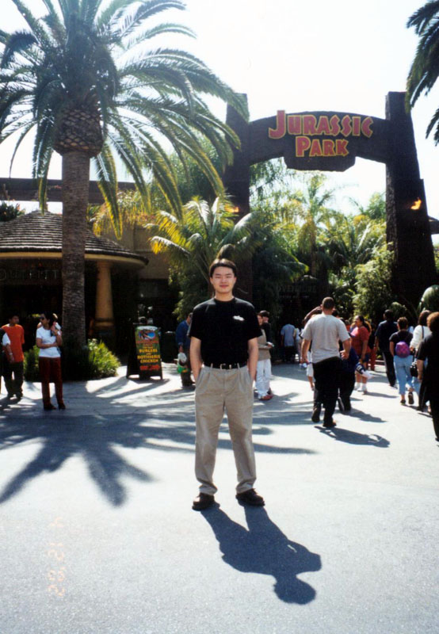

|
A good-looking man .
 |
To Jimmy
今天，看到topic上贴出了一条留言：jimmy已经上路了，祝他一路顺风，不禁感到一阵惆怅：jimmy已经去加拿大了，同tcp一样，走了，真的走了。
我认识jimmy已经有两年多了，最初的时候，我并没有在irc上与他聊过，只是听其他的朋友说起过他，并且知道他也很快就要成为我们其中的一个成员了。记得第一次见到jimmy是在徐家汇的东方商厦下，我们一群朋友集合在一起，要去某家公司里会见一位Linux公司的总经理。我在一群老朋友之中，腾然间看到了一位陌生的高大身材的背影，
在一位朋友的介绍下，才知道，这就是那位‘传说’中的新朋友---jimmy。那时，我们整个群体就象一块磁铁，吸引了许多新的朋友，jimmy也是其中的一位。不久，他积极地参与了一些集体的事务，不过，起初他也只是象天空中的一颗小星星，虽然也在发光，但是‘太阳’的耀眼光芒只是暂时掩盖了星星的光辉。太阳是属于白天的，而星星则是黑夜的光源。自从那个时代落幕后，jimmy和部分的朋友，回到了#Unix, 他们从那儿又开始了新的努力。从那时开始，到他去加拿大为止，他几乎参与了我们现在这个群体所有的活动项目，无论是geekbone的开拓，频道的维护，还是聚会的策划与组织，都能看到他的高大的身影。他热爱这些朋友，朋友们也爱他，这或许是我们这个频道中所有朋友的一个共同特点。jimmy是从过去走向未来的人，他曾经参与了过去的事业，始终对于从那时起便产生的一种信念不曾放弃。我与他曾经多次交谈过，最初的时候，我对他的了解并不是很深，但是接触久了才慢慢感受到他的一种精神力，这不是一种对于GNU的血性式的激情，而是一种长久的稳定的信念，而这种信念并不只是对于GNU/Linux，同时也是对于周围的朋友。他从来都不认为自已是一支中坚力量，倒是经常很谦虚地自认为是小兵一个，或许对于他来说，象Lei,wuming他们才是这个群体的精神与力量的中心，不过，在我看来，他的力量并不在于技术上的或者是资历上的（在这个方面，他也不输给其它人）而在于精神与信念上的恒稳，不张扬但是却在不断追求，他可能没有做过惊天动地的业绩，但是他却绝对在所有人的背后默默地支持着群体的稳固。
频道里的很多人都与他很熟悉，记得2000年6月，在上海展览中心第一次开linux expo的时候，我与他一起去了，并在那儿第一次见到了后来被大伙津津乐道的他自制的一件T-shirt，上面印上了一些userfriendly的漫画和#Unix Channel两个单词，也许，给每一位朋友一件印有#Unix字样的T-shirt也曾经是他的梦想之一吧。那天，他也见到了Dkman,sailer,Update三位新朋友。三个月后，在浦东的一家餐馆里，我与他又一次坐在了一起，这次是为了迎接Mada的到来。这是我们第一次见到Mada，那天聊了很久，最后还是由jimmy送了mada回去。不过，我想对于大多数人来说，他们见到jimmy还是在今年年初的大聚会上，#Unix经历了四载，物是人非，许多人都是新面孔，但是jimmy和wizard等老朋友们的到来却象是一块块定心石，是#Unix的推动力与稳定的核心。jimmy参与的最后一次聚会应该是今年的CeBIT ASIA展上，这次的聚会不用我多说，还是象过去的一样，他仍旧是主要的组织者。他的这些活动，虽说可能比不上过去他曾经参加过的几次比较有规模的GNU活动，但是与那时相比较而言，他是在以他自已的思想和信念在默默地撑起一个理想中的天空。就象一部小说中说的：他是一位隐士，默默地引导着自已的军队走向胜利。
我最后一次见到他，是在星期四的科技图书公司的底楼，那时，他正在为去加拿大采购电子词典。我们在那儿聊了一会儿。我惊奇地发现他穿着一件印有英文的T-shirt, 上面清晰地跳出二个单词：Crazy Geek!。
我的朋友-- Geek
--------------
前面刚刚上了一次#unix,看到了topic,不禁有此杂念，突然间有一股写出来的冲动，于是泡制了此篇短文，以纪念过去
与jimmy共同努力过的日子。
by Lightening |